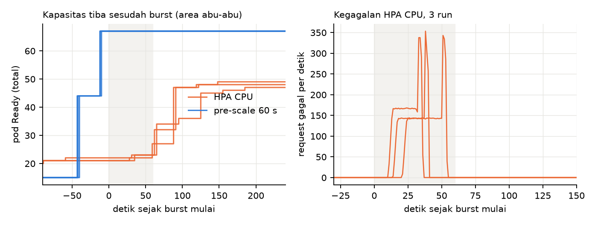
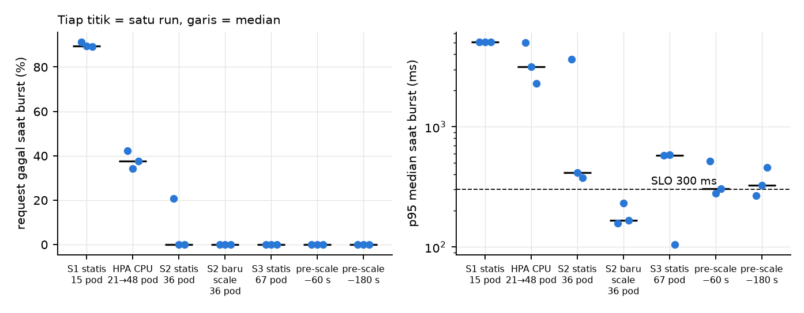
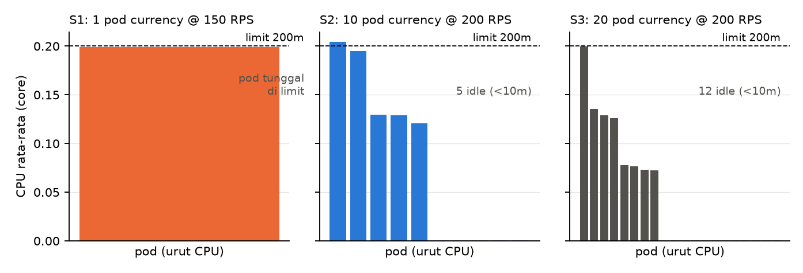

Tugas 1 — Cloud Experimental Environment
Laporan dan ringkasan 29 run terencana pada Online Boutique (kind, 3 worker, host 12 core), 2 November 2026. Disusun mengikuti soal: Bagian 1 environment, Bagian 2 fenomena, Bagian 3 research problem.
Ringkasan.
currencyservice, 11–12 pod hampir menganggur sementara pod lain menyentuh limit CPU. Pre-scale menghilangkan kegagalan tetapi p95 tetap di atas 300 ms pada 26–58 dari 60 detik burst. Penyebab ketimpangan ini belum terbukti.| Komponen | Yang dijalankan |
|---|---|
| Cluster | kind mylab99: 1 control-plane + 3 worker, Kubernetes 1.28.13, di WSL2 (host 12 core). ingress-nginx sebagai pintu masuk. |
| System under test | Online Boutique, 11 service gRPC/HTTP. Limit CPU per container 125–300m (frontend dan currencyservice 200m, request 100m). |
| Workload generator | loadgen.py: profil constant, burst-flash-sale, dan step. Dijalankan dari mesin yang sama dengan cluster. |
| Monitoring | kube-prometheus-stack (Prometheus, Grafana). Collector menarik CPU, memory, network, pod Ready, dan metrik ingress untuk window run yang sama, lalu menggabungkannya ke combined.csv (1 baris per detik). Waktu pembuatan dan Ready pod diambil dari kube-state-metrics. |
| Dataset | Dua run baseline Tugas 1 (constant dan burst-flash-sale) ditambah rencana riset yang dijalankan otomatis oleh plan/run_plan.py: 29 run, 6 jam 48 menit, 0 sel gagal. Semua ada di results/, ringkasannya di results/_plan/summary.csv. |
| Fase | Isi | Run |
|---|---|---|
| 0 Baseline | burst-flash-sale pada 15 pod (S1), dua profil | 2 |
| 1 Kapasitas | Step load 10→200→10 RPS, 60 detik per tahap, pada S1 (15 pod), S2 (36 pod), S3 (67 pod), 2 kali tiap setting | 6 |
| 2 Burst statis | Burst 4× dari L0 = 50 RPS (200 RPS selama 60 detik) pada S1, S2, S3 (3 kali), plus S2 dengan pod baru di-scale (3 kali) | 12 |
| 3 Autoscale | Mulai dari S1 (15 pod), target S3 (67 pod): HPA CPU, pre-scale 60 detik, pre-scale 180 detik (3 kali tiap strategi) | 9 |
Urutan run diacak (seed tetap). Sebelum tiap run: scale ke setting target, tunggu semua pod Ready, pemanasan 120 detik pada 25 RPS. Replica tiap run tercatat di metadata.json. SLO yang ditetapkan sebelum run: p95 < 300 ms dan request gagal < 1%. L0 = 50 RPS adalah beban tertinggi yang masih lolos SLO pada S1 (dari Fase 1). HPA memakai target CPU 50% dari request, min = S1 dan max = S3 per service.
Yang tidak jadi dijalankan. HPA berbasis RPS (KEDA) gagal dipasang karena helm tidak ada di PATH saat run, sehingga strategi sinyal-RPS belum punya data. Metrik CPU_THROTTLED kosong di Prometheus.
Burst flash sale berlangsung 60 detik pada 4× beban normal. Pada kondisi awal S1, sistem hanya sanggup 50 RPS, sehingga burst 200 RPS memerlukan kapasitas tambahan. HPA CPU mendeteksi dan menambah pod dengan cepat, tetapi kapasitas tambahan baru melayani sesudah sebagian besar burst lewat. Selama menunggu, sekitar 145–165 dari 200 request per detik gagal.

Gambar 1. Tiga run HPA CPU (oranye) dan tiga run pre-scale 60 detik (biru), waktu relatif terhadap burst mulai. Area abu-abu: burst 60 detik. Kiri: pod Ready total. Kanan: request gagal per detik pada run HPA.
| Tahap scale-out (HPA CPU, 3 run) | Terukur (detik setelah burst mulai) |
|---|---|
| Pod pertama dibuat oleh HPA (deteksi) | +2 sampai +17 |
| Kegagalan mulai | +10 sampai +21 |
| Pod tambahan pertama Ready | +28 sampai +35 |
| Kegagalan berhenti | +34 sampai +52 (lama 24–31 detik) |
| Separuh pod tambahan Ready | +65 sampai +91 |
| Pod terakhir dibuat | +64 sampai +130 |
| Jumlah pod puncak (47–49) Ready | +122 sampai +185 |
| Waktu dari pod dibuat sampai Ready (semua pod baru) | median ±30 s (6–63 s) |

Gambar 2. Burst 4× (50 → 200 RPS, 60 detik). Satu titik per run (n = 3 tiap kolom), garis tebal median. p95 dibatasi timeout generator sekitar 5 detik.
| Strategi | Pod saat burst | Gagal saat burst | p95 median saat burst (ms) | Total gagal / run |
|---|---|---|---|---|
| S1 statis | 15 | 89–91% | 5045 | 36–38 ribu |
| HPA CPU (target 50%) | 21–23 → 47–49 | 34–42% | 2302–5022 | 4,0–5,0 ribu |
| S2 statis | 36 | 0%, 0%, 21% | 377, 413, 3638 | 0, 0, 7,4 ribu |
| S3 statis | 67 | 0% | 105, 578, 583 | 0 |
| Pre-scale 60 detik sebelum burst | 67 | 0% | 278–517 | 0 |
| Pre-scale 180 detik sebelum burst | 67 | 0% | 267–458 | 0 |
Pre-scale 60 detik membuat 67 pod Ready sekitar 10–12 detik sebelum burst pada ketiga run. Request gagal nol, tetapi p95 masih di atas 300 ms pada 26, 33, dan 58 dari 60 detik burst. Jadi kapasitas yang datang tepat waktu menghilangkan kegagalan, tetapi belum memulihkan latency.

Gambar 3. CPU rata-rata tiap pod currencyservice pada beban tertinggi di Fase 1 (S1 150 RPS, S2 dan S3 200 RPS), satu run per setting. Garis putus-putus: limit CPU 200m.
currencyservice, dan S3 hanya 8–9 dari 20. Pod yang aktif sebagian menyentuh limit 200m. Rasio pod tersibuk terhadap rata-rata: 2,6× (S2) dan 4,3× (S3).currencyservice memakai 0,40 core dengan 3–4 pod aktif (3 run), tetapi 0,63–0,66 core dengan 6 pod aktif pada S2 yang baru di-scale (3 run).Batasan dan hal yang belum terbukti.
frontend memakai satu koneksi gRPC jangka panjang ke tiap backend lewat ClusterIP, sehingga kube-proxy memilih pod hanya saat koneksi dibuat dan pod baru tidak ikut menerima beban. Pendukung: jumlah pod aktif mendekati hitungan pemilihan acak (8 frontend ke 10 pod ≈ 5,7 pod berbeda, teramati 5; 16 frontend ke 20 pod ≈ 11,9, teramati 8–9). Koneksinya belum diperiksa dan kode frontend belum dibaca.frontend juga initial delay 10 detik), jadi waktu "dibuat sampai Ready" ikut terkuantisasi oleh setting itu. Kontribusinya belum dipisahkan dari waktu start container.Eksperimen menunjukkan bahwa pada burst 60 detik, autoscaler reaktif berbasis CPU memberi kapasitas sesudah sebagian besar kerusakan terjadi: kegagalan mulai +10–21 detik, pod tambahan pertama Ready +28–35 detik, kapasitas penuh +122–185 detik. Pre-scale membuktikan bahwa kapasitas yang tersedia lebih awal menghilangkan kegagalan, tetapi tidak memulihkan p95, dan menambah pod tidak otomatis menambah kapasitas efektif karena sebagian replica tidak menerima beban.
Bagaimana mendeteksi burst workload lebih awal dan menyiapkan kapasitas yang benar-benar melayani beban, sehingga request gagal saat burst flash sale tetap di bawah 1% dan p95 tetap di bawah 300 ms, tanpa menyediakan seluruh kapasitas puncak sepanjang waktu?
Termasuk kategori autoscaling dan resource allocation dalam daftar soal, dengan unsur workload prediction (sinyal awal) dan resource efficiency (biaya pod yang disiapkan lebih awal). Ia lahir dari data cluster kind yang sama, dengan harness dan metrik yang sama.
run_plan.py tetapi belum terpasang) dan pre-scale terjadwal atau prediktif, menggantikan CPU.Memakai harness yang sudah ada: burst 4× dari L0 = 50 RPS, mulai dari S1, target maksimum 67 pod, 3 kali tiap sel atau lebih, urutan diacak, prosedur reset yang sama.
| Pembanding | Yang diubah | Status |
|---|---|---|
| Baseline | HPA CPU | Sudah ada: 34–42% gagal |
| A | Pre-scale terjadwal | Sudah ada: 0% gagal, p95 median 278–517 ms |
| B | Sinyal RPS di ingress (KEDA), distribusi beban tidak diubah | Belum dijalankan |
| C | Sinyal RPS + load balancing gRPC per request | Belum dijalankan |
| D | C + pod cadangan berprioritas rendah | Belum dijalankan |
Ukuran: request gagal total, p95 saat burst, waktu dari burst mulai sampai kapasitas penuh dan sampai p95 < 300 ms stabil, rasio pod aktif terhadap total pod, dan biaya (pod-detik). Kriteria berhasil: gagal < 1%, p95 < 300 ms, dan biaya pod-detik lebih rendah dari pre-scale penuh ke 67 pod.
frontend pada S2, lalu bandingkan sebaran CPU antar pod currencyservice sebelum dan sesudah, untuk menguji dugaan koneksi gRPC yang tertambat.helm dan KEDA, lalu jalankan sel sinyal RPS.| # | Slide | Isi dari data ini |
|---|---|---|
| 1 | Research context | Flash sale: beban naik 4× dalam sekejap, kapasitas harus siap dalam detik |
| 2 | Experimental environment | kind 1+3 node, ingress-nginx, Prometheus/Grafana, loadgen (Bagian 1) |
| 3 | Application architecture | Online Boutique, 11 service, frontend memanggil currencyservice dan service lain lewat gRPC |
| 4 | Experimental setup | Setting S1/S2/S3, SLO, urutan acak, reset, 29 run |
| 5 | Workload scenario | Step 10→200→10 RPS dan burst 50 → 200 RPS selama 60 detik |
| 6 | Metrics dan data collection | workload.csv + Prometheus → combined.csv, waktu pod dibuat dan Ready |
| 7 | Experimental results | Gambar 2 dan tabel strategi |
| 8 | Observed phenomenon | Gambar 1: kapasitas tiba setelah burst, kegagalan 24–31 detik; Gambar 3 sebagai pendukung |
| 9 | Research problem dan question | Bagian 3.2 |
| 10 | Proposed contribution | Bagian 3.3 |
| 11 | Evaluation design | Bagian 3.4 |
| 12 | Expected contribution | Gagal < 1% dan p95 < 300 ms saat burst dengan biaya pod lebih rendah dari pre-scale penuh |